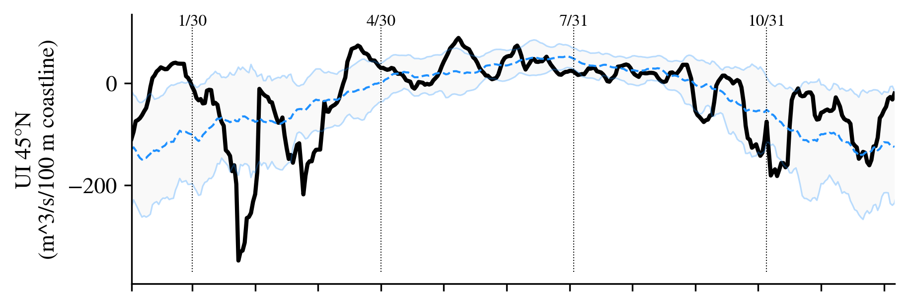

Overall, 2025 saw average total integrated upwelling in the north (Newport, OR; 45°N). Unusual this year were the strong pulses of upwelling before a rapid transition to downwelling during January and February, which repeated again in March, before transitioning to fairly average levels for most of the summer. The fall transition to a mostly downwelling state occurred in late August/early September.

Daily estimates (1-day moving average) of offshore Ekman transbort of water (Bakun Upwelling index) in 2025, relative to the 1967-2025 climatological average (blue dashed line) +1 s.d. (shaded area) at latitude 45°N. Daily 2025 values of Bakun upwelling index are provided by M. Jacox, NMFS/SWFSC; detailed information about these indices can be found at https://go.usa.gov/xG6Jp.